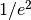

fitting.fit_waist¶
-
fitting.fit_waist(y, dz)¶ Convenience function for extracting the beam waist from a knife-edge intensity profile using
waist()and regularly spaced points.Parameters: - y (array) – Transmitted power.
- dz (float) – Change in z-position of knife edge between subsequent power readings.
Returns: Fit results
- A amplitude, total power,
- y0 offset, background light level,
- z0 center of beam,
- w0 beam waist defined as  - radius of intensity.